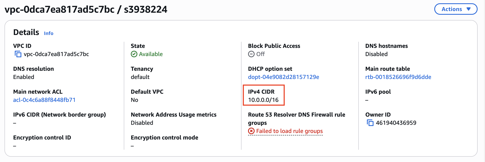
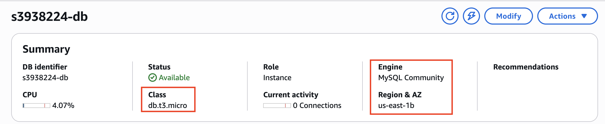

AWS Cloud Infrastructure
&
Cost Analysis
Implementation of a secure, scalable, and highly available cloud environment featuring isolated network layers, automated resource provisioning, and decoupled data storage management.
Core Technologies Implemented
Project Documentation & Demo
Detailed architectural insights and a live environment walkthrough are available in the technical resources below:
Technical Objective
The core objective was to design a production-ready infrastructure on Amazon Web Services (AWS) that adheres to the Well-Architected Framework. The project focused on ensuring fault tolerance, eliminating single points of failure, and maintaining strict security perimeters between the web layer and the database layer.
Infrastructure Implementation & Output
1. Network Foundation (VPC Design)
The foundation consists of a custom Virtual Private Cloud (VPC) utilizing a 10.0.0.0/16 CIDR block. To achieve High Availability, resources were distributed across two Availability Zones (AZs) in the us-east-1 region. The architecture segments the network into two distinct layers:
- Public Subnets: Hosts the web tier and Internet Gateway (IGW) for client-facing traffic.
- Private Subnets: Isolates the data tier from direct internet access, utilizing a NAT Gateway for secure outbound communication required for system updates.
2. Compute & Security Hardening
The compute layer utilizes Amazon EC2 instances running optimized Linux environments. Output achievements include:
- Automated Provisioning: Implemented User Data scripts to automate the installation of dynamic web environments (PHP/Apache) during the launch phase.
- Security Controls: Configured stateful Security Groups to enforce strict traffic boundaries: allowing HTTP (Port 80) for web traffic while restricting SSH (Port 22) to administrative IPs.
- IAM Integration: Applied Least Privilege access by assigning IAM roles to EC2 instances, enabling secure interactions with S3 storage without hardcoded credentials.
3. Managed Data Tier (RDS & S3)
Data persistence and asset management were achieved through managed services to reduce operational overhead:
- RDS MySQL: Deployed a relational database within a private subnet. Communication is restricted to the web tier over Port 3306, ensuring the database is hidden from the public internet.
- S3 Storage: Provisioned buckets for media hosting and archives. Versioning was enabled as a critical output to ensure data integrity and facilitate recovery from accidental deletions.
Production Environment Walkthrough

Architected a highly available, fault-tolerant Virtual Private Cloud (VPC) isolated across multiple Availability Zones (us-east-1a and us-east-1b). The infrastructure separates public subnets for public-facing web servers from private subnets hosting isolated database instances, tied together securely using an Internet Gateway and proper route management.


Configured the core network network using a custom 10.0.0.0/16 IPv4 CIDR block allocation. Network traffic control is tightly restricted via Security Groups (Web_SG), explicitly provisioning stateful firewall entries that limit ingress connectivity strictly to HTTP web requests (Port 80) and secure terminal management via SSH (Port 22).


Provisioned high-performance t3.micro EC2 compute instances running active web server software, map-linked directly to a static Elastic IP for reliable external access. Back-end state persistence is governed by a dedicated Amazon RDS MySQL instance deployed within the secure private subnet perimeter to safeguard core system information.
Financial Audit & Cloud Cost Modeling
A comprehensive cost analysis was conducted using the AWS Pricing Calculator to ensure the architecture remains cost-efficient. By utilizing t3.micro instances and optimizing resource allocation, the infrastructure achieves enterprise-grade performance with minimal overhead.
| Infrastructure Component | Technical Details | Estimated Monthly Cost |
|---|---|---|
| Compute (EC2) | 2 Nodes | t3.micro | Application Tier | $18.38 |
| Database (RDS) | MySQL | Single-AZ | db.t3.micro | $54.86 |
| Storage (S3) | 5 GB | Media & Archives | Versioning Enabled | $0.13 |
| Networking | 4 Subnets | 2 AZs | IGW & NAT Gateway | $0.00 |
| Total Monthly Expenditure: | $73.37 / mo | |
Key Outcomes
Through this implementation, a fully functional multi-tier environment was delivered. The project successfully demonstrated the ability to bridge connectivity gaps, manage cross-zone failovers, and maintain a highly secure posture for dynamic web applications while keeping the total annual projected cost at approximately $880 USD.